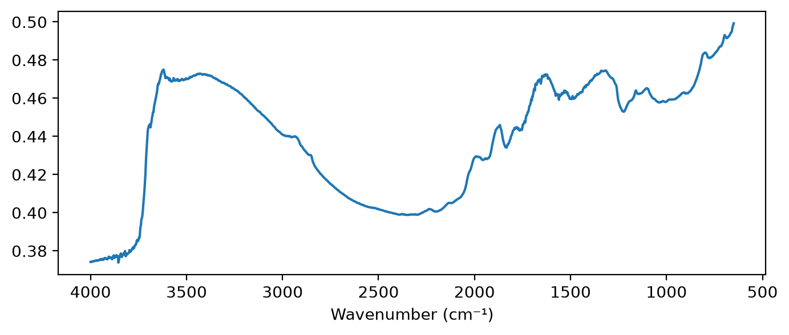

import matplotlib.pyplot as pltReaders
Read spectra from instrument files into a
Spectra
Thermo OMNIC files
read_spa
def read_spa(
fn, # Path to a Thermo OMNIC `.spa` file
)->tuple: # (wavenumbers in increasing order, values, measurement type)Read the spectrum in a Thermo OMNIC .spa file
Thermo Nicolet spectrometers save each spectrum as an OMNIC .spa file. read_spa reads one file and returns its wavenumbers, its values and its measurement type. The wavenumbers are in increasing order, as Spectra expects. The file stores only the first and last wavenumbers and the number of points, so read_spa rebuilds the evenly spaced grid from them.
read_spa reads the unit codes in the file header. It accepts wavenumbers in cm⁻¹ and absorbance values, and raises a ValueError for other units. The background files of the Fukushima measurements, for example, carry y-unit code 15, not absorbance.
This file is replicate a of Fukushima sample 1160, measured by Jumpei. Its 1,738 points cover 650 to 4000 cm⁻¹ at the instrument’s native step of about 1.93 cm⁻¹. The CO₂ band from 2266 to 2391 cm⁻¹ is still present:
wns_spa, spc, mtype = read_spa('files/1160a.SPA')
test_eq(mtype, 'abs')
test_eq(len(wns_spa), 1738)
test_close(wns_spa[[0, -1]], [649.893, 3999.641], eps=1e-3)
fig, ax = plt.subplots(figsize=(8, 3))
ax.plot(wns_spa, spc)
ax.invert_xaxis()
ax.set_xlabel('Wavenumber (cm⁻¹)');
The grid depends on the measurement settings, so different batches can differ. Sample 100, measured by Ayane, starts at 600 cm⁻¹, and its grid has 1,764 points with the same step. Spectra from several batches must be interpolated onto a shared grid before they go into one Spectra:
wns_ayane, _, _ = read_spa('files/100a.SPA')
test_eq(len(wns_ayane), 1764)
wns_ayane[[0, -1]], np.diff(wns_ayane).mean(), np.diff(wns_spa).mean()(array([ 599.75317383, 3999.63964844]),
np.float64(1.9284665199145632),
np.float64(1.9284670779810738))load_spa
def load_spa(
fns, # Paths of `.spa` files, with one file per replicate
wns, # Wavenumbers to interpolate onto, in cm⁻¹, in increasing order
id_re:str='^\\d+', # Regex whose match at the start of a file name is the sample ID
)->soilspecdata.types.Spectra: # One spectrum per sample, the mean of its replicatesRead .spa files, interpolate each onto wns, and average the replicates of each sample
load_spa builds a Spectra from many .spa files. Files whose names start with the same sample ID are replicates of one sample, wherever they are stored. It interpolates each file onto wns with linear interpolation, then averages the replicates. Replicates of one sample usually share a grid, and linear interpolation then gives the same result as averaging first. Interpolating first also handles replicates measured on different grids.
Here the two replicates of sample 1160 and the replicate of sample 100 go onto the grid shared with OSSL, from 650 to 3998 cm⁻¹ at a 2 cm⁻¹ step. The sample IDs are in order of first appearance:
grid = np.arange(650, 3999, 2)
fuku = load_spa(['files/1160a.SPA', 'files/1160b.SPA', 'files/100a.SPA'], grid)
reps = [np.interp(grid, *read_spa(f'files/1160{r}.SPA')[:2]) for r in 'ab']
test_eq(fuku.sample_ids, ['1160', '100'])
test_close(fuku.spectra[0], np.mean(reps, axis=0))
fuku.spectra.shape, fuku.measurement_type((2, 1675), 'abs')load_spa does not extrapolate. The Fukushima files end at 3999.64 cm⁻¹, so a grid that ends at 4000 cm⁻¹, as OSSL does, raises a ValueError:
with expect_fail(contains='does not include `wns`'): load_spa(['files/1160a.SPA'], np.arange(650, 4001, 2))